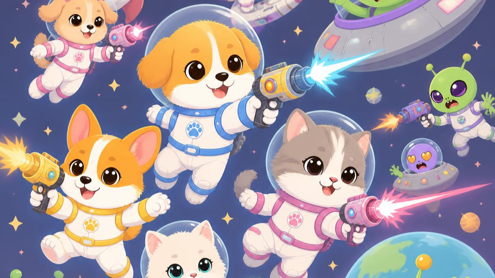

Identificação do participante
Responda às perguntas e descubra seu papel na missão.
RELATÓRIO DE EXPLORAÇÃO

SEU PERFIL
Projeto Aura // ANO 2089
Descubra seu perfil para explorar um novo planeta!
Responda às perguntas e descubra seu papel na missão.
RELATÓRIO DE EXPLORAÇÃO

SEU PERFIL